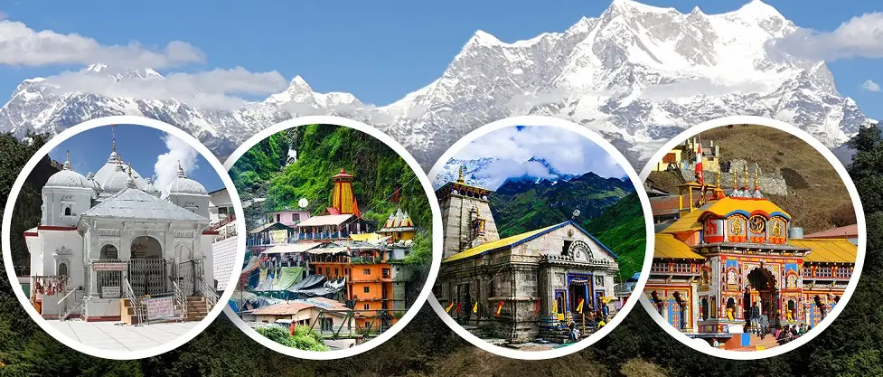
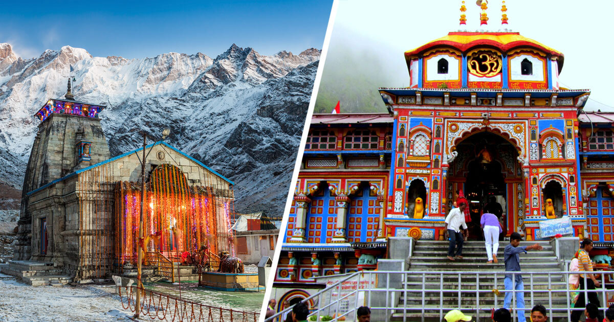
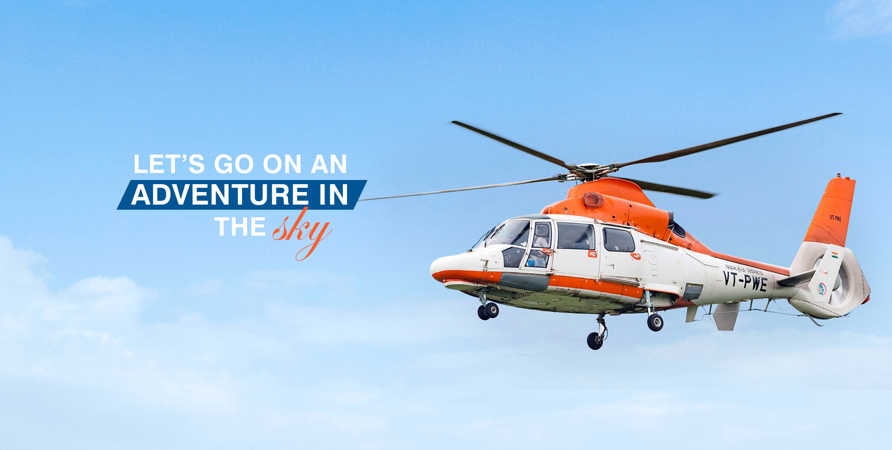
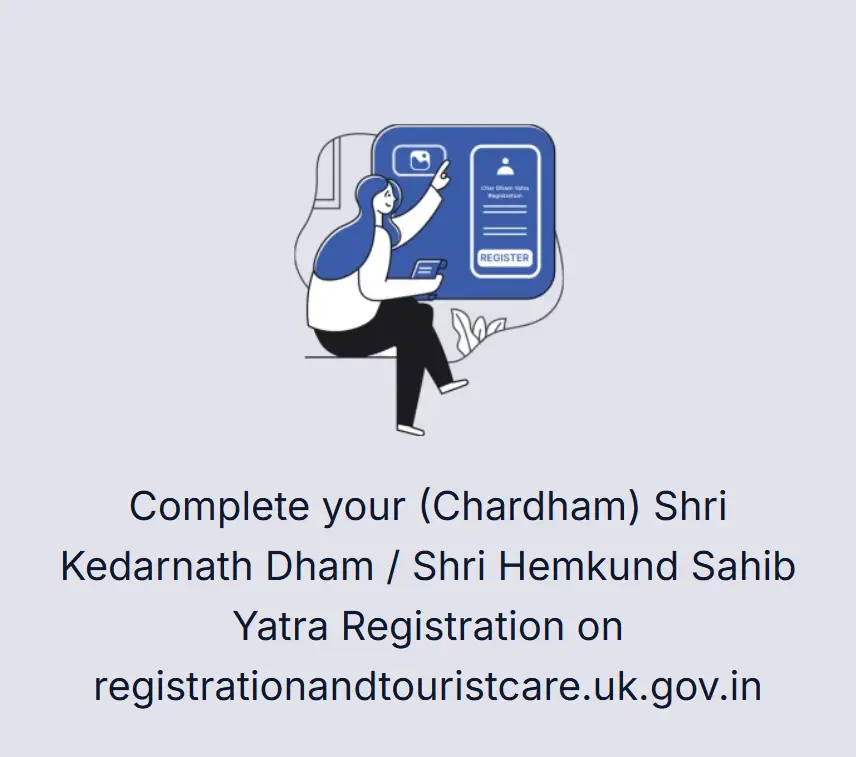
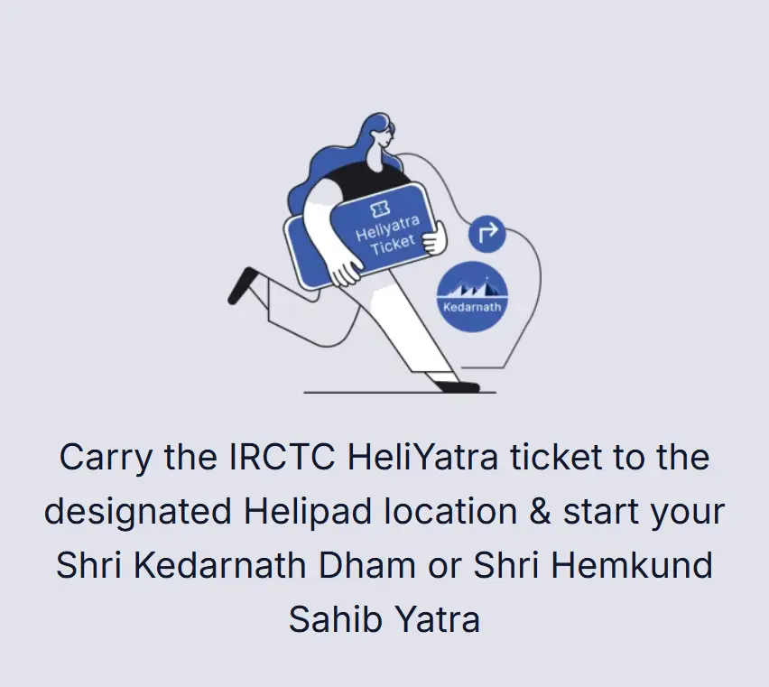
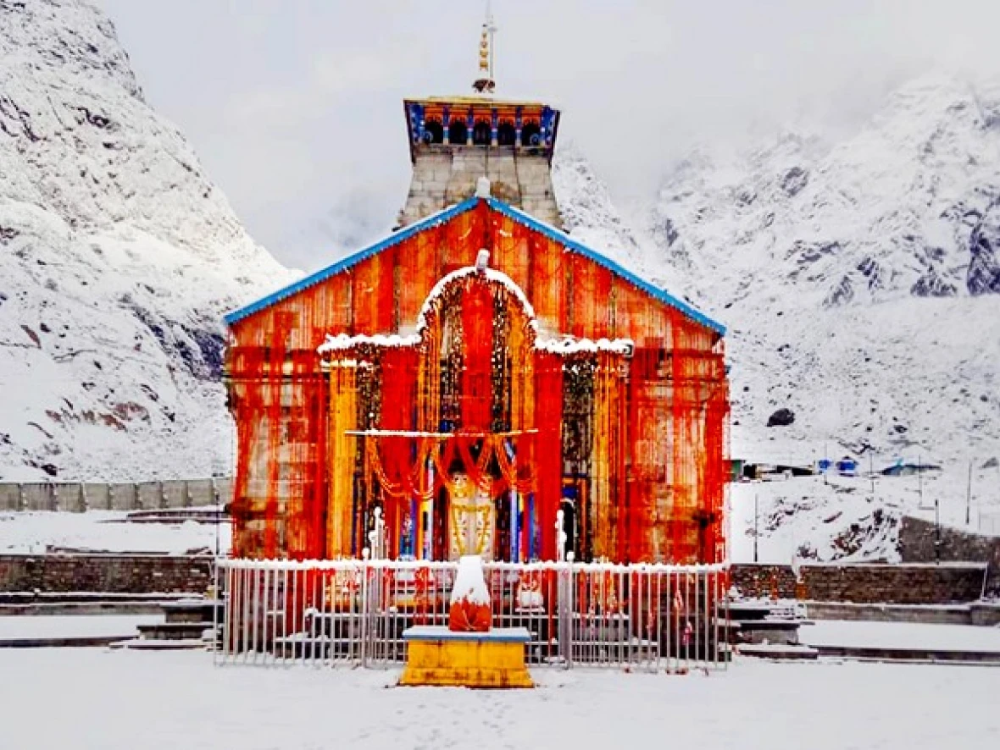
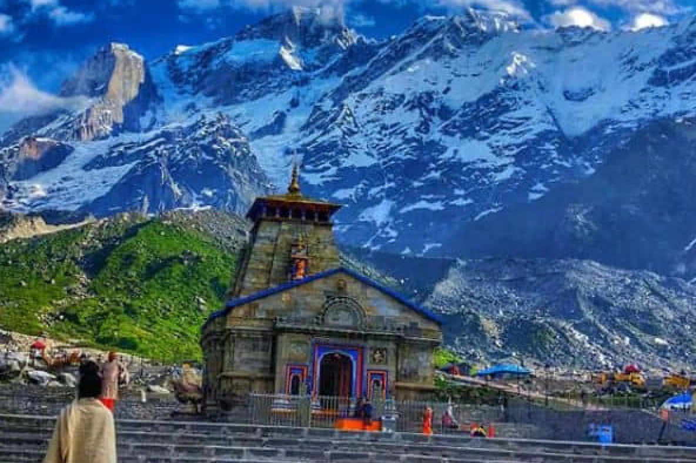
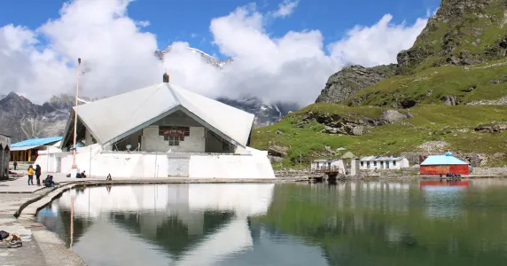

Sersi to Kedarnath Yatra
Experience the divine journey to the sacred Kedarnath Temple
One Way₹3,043
Round Trip₹6,086
Helicopter Operators
Trans Bharat AviationGuptkashi to Kedarnath Yatra
Experience the divine journey to the sacred Kedarnath Temple
One Way₹6,077
Round Trip₹12,154
Helicopter Operators
Trans Bharat Aviation Chipsan AviationsPhata to Kedarnath Yatra
Experience the divine journey to the sacred Kedarnath Temple
One Way₹4,840
Round Trip₹9,680
Helicopter Operators
Trans Bharat Aviation Thumby Aviation Rajas Aerosports and Adventures Pilgrimage AviationDehradun to Kedarnath Yatra
Experience the divine journey to the sacred Kedarnath Temple
One Way₹11,250
Round Trip₹22,500
Helicopter Operators
Trans Bharat Aviation Thumby Aviation Rajas Aerosports and Adventures Pilgrimage Aviation

General Instructions for Passengers
- Please carry original Aadhaar card and yatra registration documents for verification.
- Passengers must report at the designated helipad at least 2 hours before departure.
- Ticket booking is subject to weather conditions and operational clearance from authorities.
- Correct name, age, gender, Aadhaar number, and mobile number are mandatory for all passengers.
- Payment proof must include valid transaction ID / UTR number and readable screenshot.
- Children and senior citizens should travel with accurate medical and identity information.
- Cancellation and refund rules apply as per helicopter service policy.

About Kedarnath
Kedarnath is one of the most sacred temples dedicated to Lord Shiva and is located in the Rudraprayag district of Uttarakhand. The shrine stands near the Mandakini river and is surrounded by snow covered Himalayan peaks.
The route to Kedarnath is spiritually important and logistically demanding. Helicopter services help pilgrims complete the yatra with better time management while still requiring proper passenger verification and document checks.


More Information
Badrinath Dham is dedicated to Lord Vishnu and is one of the most visited destinations in the Char Dham circuit. Pilgrims travelling through Uttarakhand should keep their itinerary, registration, identity documents, and helipad reporting time ready.
History and Facts
Shri Kedarnath Dham
One of the four important sites of Chota Char Dham pilgrimage, Kedarnath Dham is known for its ancient temple, high-altitude location, and strong religious significance. The temple is visited during the yatra season by pilgrims from across India.
Shri Badrinath Dham
Badrinath temple is located in the Garhwal Himalayas near the Alaknanda river. It forms an important part of the Char Dham route and is known for its spiritual importance, mountain setting, and seasonal pilgrimage operations.